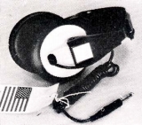
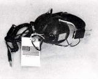
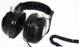
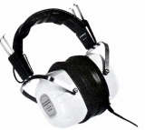
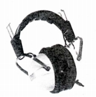

SUPEREX (スーペレックス)
1970年代に輸入されていたアメリカのヘッドフォン・ブランド。当時の「STEREO GUIDE」をみても、ヘッドフォン以外の製品の記述は無く、詳細は不明。当時の代理店はハーマンインターナショナル・インダストリーズ。「コス」同様にごつく頑丈そうな製品を作っていたようだ。



（左 ST-N 中央 ST-V 右 PRO-B�W）
（4チャンネル機） QT-4B

（コンデンサー型） PEP-71

(PEP-71)